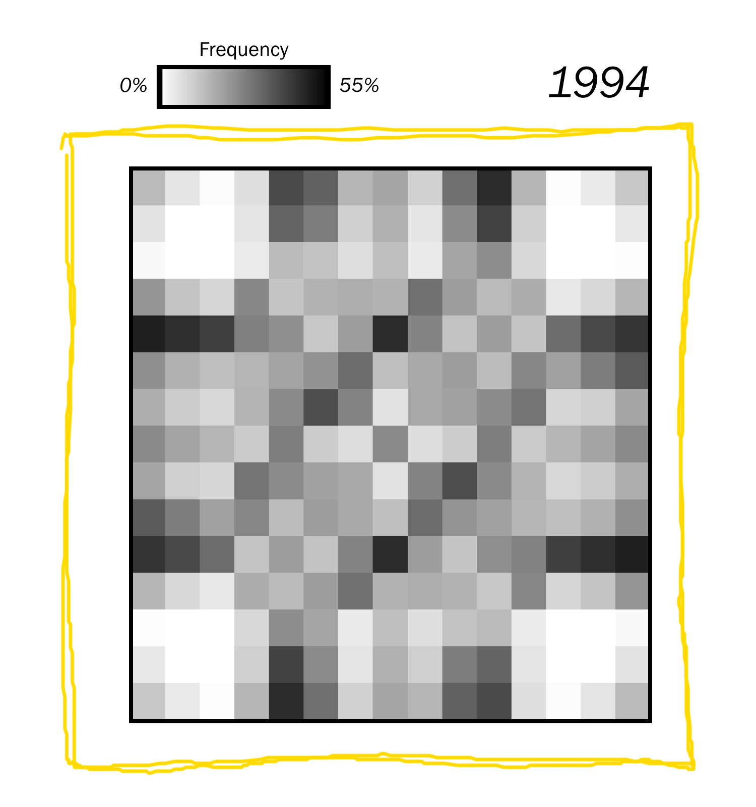
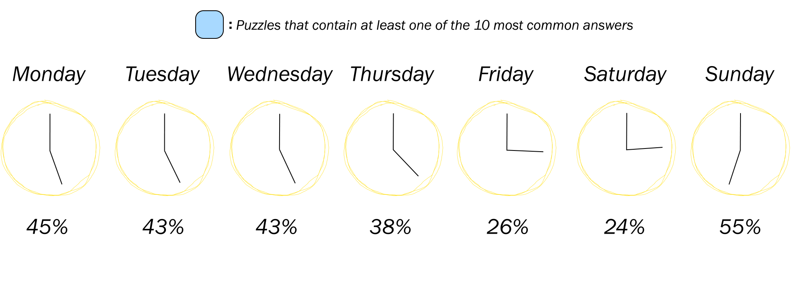
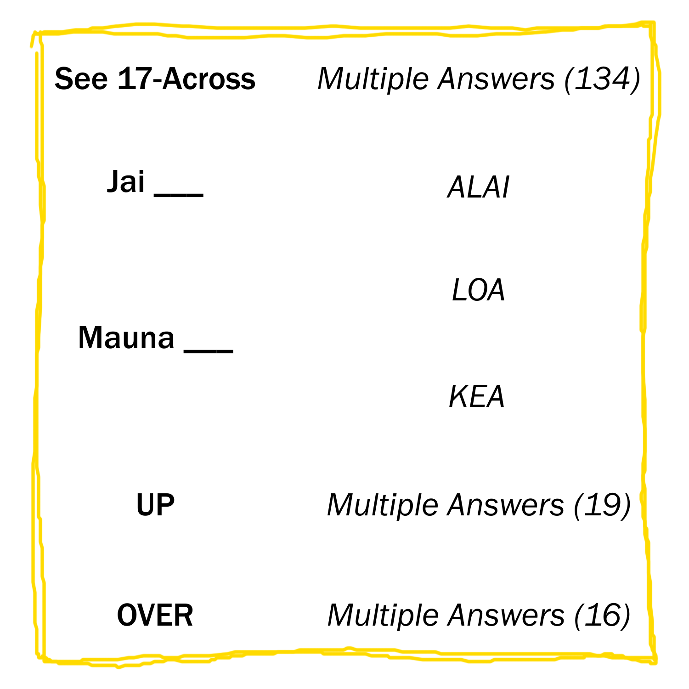

1
One Million Crossword Clues
The New York Times crossword is a cultural icon. Initially born into the
Times as a
means for Americans to escape the gloominess of an impending war in 1942, the crossword has survived for
more
than 83 years, and developed a strong following over time.
Like learning most things, a large part of solving the crossword is about pattern
recognition: understanding a crossword theme or filling in missing letters in a familiar word. Patterns
are also found within crossword construction: both in the grid configuration as well as common clue
and
answer pairs. Analyzing that system can help you better understand the crossword and make you a better
solver.
2
About the Data
The data for this analysis comes from Nov. 21, 1993 to Jan. 1, 2025, totaling
11,365
puzzles and 949,106 clues, from XWordInfo.com, which contains puzzle information for every Times
crossword
ever published.
While the data from 1942 to 1992 is certainly useful, the date restrictions here
are so
that the observations are only from the Will Shortz era, when he edited the crossword. This just makes
the
stylistic choices of Shortz's puzzles more apparent in the data.
3
Grid Analysis
With over 11,365 puzzles in the dataset, there are bound to be repeating tile
configurations. Below is the most common pattern, which appears 14 times over the last 30 years:

This pattern was most recently published on
December 1st, 2014, so despite it being the most frequent pattern, it's still fairly rare.
4
In fact, nearly all of the puzzle tile patterns are unique:
Though this might be the case, there are still important insights to be gained from
observing the placement of the white and black squares.
5
Below is a heatmap of the tile patterns of all 15x15 crosswords in the dataset. Though
puzzle sizes vary over the week, there are 9,369 crosswords with these dimensions. The scale shows, for each
tile, what percentage of crosswords have a black square in that location.
Notice how all of the corners of the grid are left empty, since one or two-letter
answers are extremely rare. Instead, there are clear borders around those areas, making three and
four-letter words dominate those spaces. Nearly all puzzles have rotational symmetry, which helps explain
the
pattern of white spaces in the middle, since placing a black square there would mean a one-letter answer
would need to be in the center of the grid.
6
This pattern does not change much over the years, either.

Above is the same heatmap, smoothed over each year. Though there is some variance year
to
year, as a whole, the same pattern of rotational symmetry and white corners is visible throughout.
7
Answer Analysis
There's plenty of insight to be gained from the text that fills the grid of
the puzzle, too. Being bound to the constraints of the English language, certain words appear more
frequently than others because of their flexibility.
Words like ERA, AREA, and ERE all contain common letters, and their length
makes them extremely useful for puzzle-makers, who employ them in the corners of the grid where longer
words can't be
placed.
8
Word structures that follow a "CVC" pattern, or a consonant,
followed by a vowel, followed by another consonant, are the most commonly used in puzzle answers. Below is a
table of the next 4 most frequent sound patterns:
Again, it follows that these are short words with standard and frequent vowels.
9
There's some discrepancy in how often the most frequent answers appear in the
puzzle, based on the day. Generally, the puzzle gets progressively harder over the week, with Monday
being the easiest and Saturday being the hardest. Sunday, however, is an exception - it's based at a
Thursday level, but is a lot bigger: 21x21 instead of the standard 15x15.
10
One way puzzle makers implement this difficulty is by
including more novel words, as seen below. On the more difficult days of the week, common words are
less likely to be seen, whereas early in the week, they're more abundant.

Sunday puzzles are an exception to this pattern, since the large size of the grid means
more clues,
so common words are more likely to be reused.
11
Another way of describing this pattern is by
looking at the type-token ratio, which describes the lexical diversity of the puzzles by dividing the number
of unique answers by the total number of answers.
The advertised difficultly is indeed correlated with lexical diversity: in a given
year, over 90% of answers are unique between each Saturday variant of the puzzle, compared
to only 80% with Mondays.
12
Aside from just using new words, puzzle creators also vary
the length of answers (including spaces) to achieve difficulty.
Here, the difference in difficulty is clear: more difficult puzzles tend to
have longer answers. That also means they are less likely to repeat short answers,
so length and lexical diversity go hand-in-hand.
13
The answers are only one half of the crossword, though: the clues also
play a vital role in difficulty and completion.
For instance, the common answer "SSN" might be paired with a clue like
"Nine-digit ID" on a Monday (36-Across, 7/24/2006) but a more difficult "Subj. of the Privacy
Act of 1974" on a Saturday (8-Down, 10/29/2011).
As clues vary across days and over the years, they are important to analyze.
14
Clue Analysis
Below is an ordered list of the most common clues in the crossword, paired with
some of their answers.
Notice that the most common clues are really just ways to access unique
but
common answers. From a writer's perspective, a word like ALAI is useful for its short
length and high concentration of vowels, but there are only so many ways to reference it. Using
the sport of jai alai is simply the easiest.

The same can be said for a clue like "Up", which can be answered with ATBAT,
ALOFT, or ASTIR. The most common clue, though, is significantly different: it references a
specific grid location rather than being a descriptor of a word.
15
To understand why 17-Across is so special, take four puzzles
that feature the clue.
In each of these grids, 17-Across is the first lengthy answer. These longer spaces are
often used by puzzle makers to create a theme or shared answer, which connects over other, longer answers.
However, the later clues do not need to repeat the same phrasing as the first, so they default to "See
17-Across".
16
This phenomenon is best understood with an example. The
17-Across clue in the top right crossword of the previous diagram reads: "With 36- and 59-Across,
words of Alexander
Pope." Then, 36- and 59-Across, rather than repeat the same clue, both say "See 17-Across."
The answers to these three clues are filled in below:
When complete, they reveal a quote stretched across all three answers: "Fools rush in
where angels fear to tread".
17
Intricacies like this are what make both completing and analyzing crosswords so
fulfilling.
18
Honing down to just the most common clue-answer pairs
yields a
slightly different result.

The insight remains the same: common answers like SRI and
UMA can only be reached in certain ways, which leads to repeated clues for those words.
19
Interestingly, there's been a clear trend in how the
Times
chooses their clues: over the years, the average length of clues, in terms of the total number of characters
(including spaces), has consistently increased, with little variation across different days:
It's unclear whether this corresponds with a particular change in difficulty. On one
hand, longer clues increase context for an answer, but on the other, they can also increase complexity.
Regardless, it's fascinating to see such a clear trend across time.
20
The Times crossword employs a lot of conventions in
their
clues. One of them pertains to clues enclosed in quotes ("..."). According to the Times, a clue
written in
this manner is "something someone might say out loud" and its answer is "a synonym for that
verbalization".
For instance, a clue like "I goofed"
has the answer MYBAD. The most common verbalizations are listed below:
Knowing the common answers to such clues can aid in solving: 72.4% of puzzles contain
at
least one of these "quote" clues.
21
Another convention of the crossword is clues that start
and end with a square bracket ([...]). For these, the clues suggest answers that are non-verbal: a clue
like "[Get the joke?]" can be answered with WINK.
Again, below are the most common answers:
While these types of clues appear in only 5% puzzles, whenever they do appear, it will
be easy
to draw upon the above word bank to solve.
22
There are also less "formal" quirks found within
crossword clues, mainly revolving around their wording. Below is a table of the most frequently used
first words (including special characters) in Times clues. A sample clue of each type is appended
in gray:
To the untrained solver, these clues can seem purposefully confusing. However,
they are really just ways for writers to reach certain types of words: adjectives are paired with
clues that begin with "Like" ("Like much of Sudan": ARID) and clues that start with "Kind" are
answered with prefixes ("Kind of bean": SOY), for instance.
23
The same can be done for the last word in a
clue:
Endings like "e.g." and "for one" require examples as answers ("Wonder Woman, for
one": HEROINE), and the endings "Abbr." and "for short" are paired with abbreviated phrases ("Las
Vegas's home: Abbr.": NEV).
Other endings like "say", "maybe", and "in a way" can vary in their use cases, but
typically involve a non-straightforward answer ("No credit, say": CASHONLY)
24
Once more, understanding these common puzzle quirks can help you appreciate the
puzzle's construction and become a better
solver.
25
Though it might seem like the crossword follows a certain
formula, there is still plenty of room for growth. For instance, the references that the Times makes in
their clues have significantly varied over time:
Take the above chart, which shows the person referenced by clues that had the answer ADELE.
Before Adele (the singer) became a household name, the answer was still used in the crossword for its
relatively short length and high vowel count, with references to other (lesser-known) Adeles. But after
Adele began releasing albums, the crossword clues immediately pivoted to utilizing her identity
as a sole reference.
26
Even still, answers also have the potential for variance over
time.
While not as common an answer as ADELE, likely for its slightly longer length and
lower vowel density, SERENA has appeared 39 times after Serena Williams (the tennis player) won the U.S.
Open in 1999. More importantly, SERENA hadn't appeared once in the six years prior to her stepping onto
the global stage: it was solely her likeness that propelled the consistent use of the answer in the
crossword.
27
These answers in particular showcase the power of the crossword as an ever-evolving
representation of current culture. It's nice to see people, places, and things you know get featured in
these puzzles.
And while you might not necessarily be as famous as Adele or Serena Williams, you
too can discover
yourself amidst the clues.
28
Scripts that were used for this article can be found on GitHub, in
addition to information about how this project was created.
All content written, coded, and arranged by Nikhil Chinchalkar.